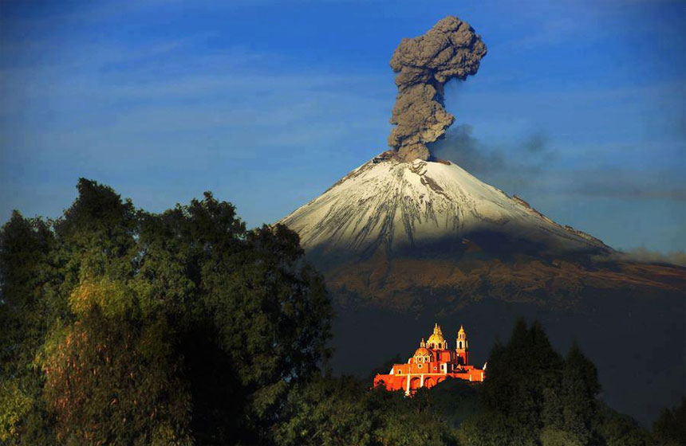

Volcán Popocatépetl
El Popocatépetl (en náhuatl: popocatepetl, ‘el cerro que humea’‘popoca, humear; tepetl, cerro’) es un volcán activo localizado en el centro de México, en los límites territoriales de los estados de Morelos, Puebla y México. Se localiza a unos 72 km al sureste de la Ciudad de México, 43 km de Puebla, 63 km de Cuernavaca, y 53 km de Tlaxcala.
Tiene una forma cónica simétrica y está unido por la parte norte con el Iztaccíhuatl mediante un paso montañoso conocido como Paso de Cortés. El volcán tiene glaciares perennes cerca de la boca del cono, en la punta de la montaña. Es el segundo volcán más alto de México, con una altitud máxima de 5500 metros sobre el nivel del mar, sólo después del Citlaltépetl de 5610 msnm.
UBICACIÓN

El Popocatépetl se encuentra a 55 kilómetros (menos de 15 millas) de la Ciudad de México y a 45 de la de Puebla, En el Parque Nacional Izta-Popo. En la Sierra Nevada, se alza el Popocatépetl, en los estados de México, Puebla y Morelos.
DIMENSIONES

5,452 m. de altura sobre el nivel del mar. 17,887 pies. Su cráter mide en la parte más ancha 612 metros y en la más angosta 400. El cráter tiene una máxima profundidad de 505 metros y es el vértice donde limitan tres estados: México, Puebla y Morelos Es el segundo más alto de nuestro país; el primero lo ocupa el Pico de Orizaba o Citlaltépetl con 5,747 m y el tercero el Iztaccíhuatl o Ixtaccíhualtl, con 5,286 m de altura. Las dos principales cimas del Popo son el Pico Mayor y el Espinazo del Diablo, ambos alrededor del cráter. Forma parte del Sistema Volcánico Transversal
MEDIDAS PREVENTIVAS
Consejos de seguridad:
1)Mantente alejado de volcanes activos.2)Si vives cerca de un volcán activo, prepara un kit de emergencia que incluya gafas de seguridad, una máscara, una linterna y una radio en buen estado que funcione con pilas.
3)Elabora una ruta de evacuación y ten el depósito de gasolina del coche siempre lleno.
4)Evacua siguiendo las recomendaciones de las autoridades para no encontrarte lava y barro, así como rocas y escombros que puede arrojar el volcán. 5)Evita zonas de ríos y regiones bajas.
6)Antes de abandonar tu casa, ponte una camisa de manga larga y pantalones largos; usa gafas de seguridad o normales, sin lentillas. Ponte una máscara de emergencia o envuélvete la cara con un paño húmedo.
7)Si no vas a evacuar, cierra puertas y ventanas, y bloquea la chimenea y otros puntos de ventilación para evitar que la ceniza entre en la casa.
8)Ten en cuenta que la ceniza puede sobrecargar el tejado y puedes necesitar retirarla. Durante la limpieza, lleva elementos de protección
9)La ceniza puede dañar motores y piezas metálicas, así que evita conducir. Si debes conducir, no superes los 55 kilómetros por hora.